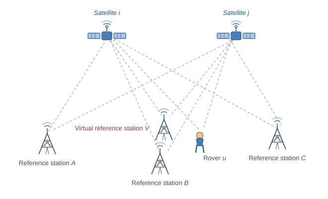
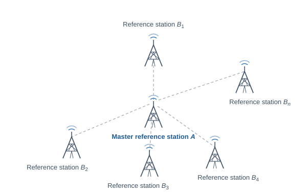

VRS Observation Generation Algorithm
Derivation of the virtual reference station
Su Jinglan
October 2026
English edition
Contents
1 Introduction
2 Observation model assumptions
3 Linearization about the master reference station
4 Tropospheric delays
5 Virtual pseudorange observations
6 Equivalence with the rover–master double differences
7 Network solution in the ENU frame
8 Virtual carrier-phase observations
9 Second-order extension
1 Introduction
This document briefly derives the basic algorithm by which the observations
of a Virtual Reference Station (VRS) are generated.
Assume that at epoch t u A B C n λ
ρ u i = r u i + c d t u − c d t i + I u i + T u i + ϵ u i ρ A i = r A i + c d t A − c d t i + I A i + T A i + ϵ A i ρ B i = r B i + c d t B − c d t i + I B i + T B i + ϵ B i ρ C i = r C i + c d t C − c d t i + I C i + T C i + ϵ C i
(1) where

Figure 1 — Reference stations, virtual reference station, rover and satellites
2 Observation model assumptions
Taking satellite j A F I
⎩ ⎨ ⎧ I u i = F I i ( r u , r i ) I A i = F I i ( r A , r i ) I B i = F I i ( r B , r i ) I C i = F I i ( r C , r i ) , ⎩ ⎨ ⎧ I u j = F I j ( r u , r j ) I A j = F I j ( r A , r j ) I B j = F I j ( r B , r j ) I C j = F I j ( r C , r j ) (3) and, in the same way, the tropospheric delays by functions
F T
⎩ ⎨ ⎧ T u i = F T i ( r u , r i ) T A i = F T i ( r A , r i ) T B i = F T i ( r B , r i ) T C i = F T i ( r C , r i ) , ⎩ ⎨ ⎧ T u j = F T j ( r u , r j ) T A j = F T j ( r A , r j ) T B j = F T j ( r B , r j ) T C j = F T j ( r C , r j ) (4) The double-difference pseudorange observation equations of the rover and of
the reference stations are then
ρ u A ij = r u A ij + I u A ij + T u A ij + ϵ u A ij ρ B A ij = r B A ij + I B A ij + T B A ij + ϵ B A ij ρ C A ij = r C A ij + I C A ij + T C A ij + ϵ C A ij
(5) 3 Linearization about the master reference station
Given the known I B A ij I C A ij I u A ij
I u A ij = I u i − I A i − ( I u j − I A j ) = F I i ( r u , r i ) − F I i ( r A , r i ) − ( F I j ( r u , r j ) − F I j ( r A , r j )) I B A ij = I B i − I A i − ( I B j − I A j ) = F I i ( r B , r i ) − F I i ( r A , r i ) − ( F I j ( r B , r j ) − F I j ( r A , r j )) I C A ij = I C i − I A i − ( I C j − I A j ) = F I i ( r C , r i ) − F I i ( r A , r i ) − ( F I j ( r C , r j ) − F I j ( r A , r j ))
(6) Expanding F I i ( r B , r i ) F I i ( r C , r i ) r A
F I i ( r B , r i ) = F I i ( r A , r i ) + ∂ r A T ∂ F I i ( r A , r i ) ⋅ ( r B − r A ) F I i ( r C , r i ) = F I i ( r A , r i ) + ∂ r A T ∂ F I i ( r A , r i ) ⋅ ( r C − r A )
(7) and, likewise, for F I j ( r B , r j ) F I j ( r C , r j )
F I j ( r B , r j ) = F I j ( r A , r j ) + ∂ r A T ∂ F I j ( r A , r j ) ⋅ ( r B − r A ) F I j ( r C , r j ) = F I j ( r A , r j ) + ∂ r A T ∂ F I j ( r A , r j ) ⋅ ( r C − r A )
(8) Substituting (6) and (7) into (5) yields
I B A ij = ( ∂ r A T ∂ F I i ( r A , r i ) − ∂ r A T ∂ F I j ( r A , r j ) ) ⋅ ( r B − r A ) I C A ij = ( ∂ r A T ∂ F I i ( r A , r i ) − ∂ r A T ∂ F I j ( r A , r j ) ) ⋅ ( r C − r A )
(9) that is,
[ I B A ij I C A ij ] = [ ( r B − r A ) T ( r C − r A ) T ] ⋅ χ I ij ( ∂ r A T ∂ F I i ( r A , r i ) − ∂ r A T ∂ F I j ( r A , r j ) ) T (10) where the column χ I ij F I i ( r u , r i ) F I j ( r u , r j ) r A
F I i ( r u , r i ) = F I i ( r A , r i ) + ∂ r A T ∂ F I i ( r A , r i ) ⋅ ( r u − r A ) F I j ( r u , r j ) = F I j ( r A , r j ) + ∂ r A T ∂ F I j ( r A , r j ) ⋅ ( r u − r A )
(11) gives
I u A ij = ( ∂ r A T ∂ F I i ( r A , r i ) − ∂ r A T ∂ F I j ( r A , r j ) ) ⋅ ( r u − r A ) = ( r u − r A ) T ⋅ χ I ij
(12) that is, the rover double-difference ionosphere equals the projection of
the gradient χ I ij
4 Tropospheric delays
The same treatment applied to the tropospheric delay gives
[ T B A ij T C A ij ] = [ ( r B − r A ) T ( r C − r A ) T ] ⋅ χ T ij ( ∂ r A T ∂ F T i ( r A , r i ) − ∂ r A T ∂ F T j ( r A , r j ) ) T (13) and
T u A ij = ( ∂ r A T ∂ F T i ( r A , r i ) − ∂ r A T ∂ F T j ( r A , r j ) ) ⋅ ( r u − r A ) = ( r u − r A ) T ⋅ χ T ij
(14) 5 Virtual pseudorange observations
Suppose that a virtual reference station V A V
I V A ij = ( r V − r A ) T ⋅ χ I ij T V A ij = ( r V − r A ) T ⋅ χ T ij
(15) and the VRS double-difference pseudorange observation equation is
ρ V A ij = r V A ij + I V A ij + T V A ij + ϵ V A ij
(16) Forming the V A u A
ρ V i − ρ A i − ( ρ V j − ρ A j ) = r V i − r A i − ( r V j − r A j ) + I V A ij + T V A ij + ϵ V A ij ρ u i − ρ A i − ( ρ u j − ρ A j ) = r u i − r A i − ( r u j − r A j ) + I u A ij + T u A ij + ϵ u A ij
(17) Expanding r u i r u j r V
ρ u i − ρ A i − ( ρ u j − ρ A j ) = r u i − ( r V i + ( r A i − r V i )) − ( r u j − ( r V j + ( r A j − r V j ))) + ( I u V ij + I u A ij − I u V ij ) + ( T u V ij + T u A ij − T u V ij ) + ϵ u V ij
(18) which can be written as
ρ u i − ρ V i ρ A i + ( r V i − r A i ) + I V A ij + T V A ij − ( ρ u j − ρ V j ρ A j + ( r V j − r A j ) ) = r u i − r V i − ( r u j − r V j ) + I u V ij + T u V ij + ϵ u V ij (19) From the above, the virtual pseudorange observations are
ρ V i = ρ A i + ( r V i − r A i ) + I V A ij + T V A ij ρ V j = ρ A j + ( r V j − r A j )
(20) Taking satellite 1 as the reference satellite of the VRS, its virtual
observations are
ρ V 1 ρ V 2 ⋮ ρ V n = ρ A 1 + ( r V 1 − r A 1 ) ρ A 2 + ( r V 2 − r A 2 ) + I V A 21 + T V A 21 ⋮ ρ A n + ( r V n − r A n ) + I V A n 1 + T V A n 1 (21) If the rover uses satellite 2 as its own reference satellite, the
double-difference pseudorange equation formed between the rover and the VRS
is
ρ u 1 − ( ρ A 1 + ( r V 1 − r A 1 )) − ( ρ u 2 − ( ρ A 2 + ( r V 2 − r A 2 ) + I V A 21 + T V A 21 )) = r u 1 − r V 1 − ( r u 2 − r V 2 ) + I u V 12 + T u V 12 + ϵ u V 12
(22) 6 Equivalence with the rover–master double differences
Expanding (21) with the definitions (19) and (20),
ρ u 1 − ρ A 1 − ( ρ u 2 − ρ A 2 ) = r u 1 − r V 1 − ( r u 2 − r V 2 ) + ( r V 1 − r A 1 ) − ( r V 2 − r A 2 ) + I u V 12 − I V A 21 + T u V 12 − T V A 21 + ϵ u V 12 = r u 1 − r A 1 − ( r u 2 − r A 2 ) + I u A 12 + T u A 12 + ϵ u A 12
(23) For any other satellite, e.g. satellite 3,
ρ u 3 − ( ρ A 3 + ( r V 3 − r A 3 ) + I V A 31 + T V A 31 ) − ( ρ u 2 − ( ρ A 2 + ( r V 2 − r A 2 ) + I V A 21 + T V A 21 )) = r u 3 − r V 3 − ( r u 2 − r V 2 ) + I u V 32 + T u V 32 + ϵ u V 32
(24) ρ u 3 − ρ A 3 − ( ρ u 2 − ρ A 2 ) = r u 3 − r V 3 − ( r u 2 − r V 2 ) + I u V 32 + T u V 32 + ( r V 3 − r A 3 ) + I V A 31 + T V A 31 − ( r V 2 − r A 2 ) − I V A 21 − T V A 21 + ϵ u V 32 = r u 3 − r A 3 − ( r u 2 − r A 2 ) + I u V 32 + I V A 31 − I V A 21 + T u V 32 + T V A 31 − T V A 21 + ϵ u V 32 = r u 3 − r A 3 − ( r u 2 − r A 2 ) + I u A 32 + T u A 32
(25) and the delay terms reduce as
I u V 32 + I V A 31 − I V A 21 = I u 3 − I V 3 − ( I u 2 − I V 2 ) + ( I V 3 − I A 3 − ( I V 1 − I A 1 )) − ( I V 2 − I A 2 − ( I V 1 − I A 1 )) = I u 3 − I A 3 − ( I u 2 − I A 2 ) = I u A 32
(26) By induction, the full set of rover–VRS double differences
ρ u V 12 = r u V 12 + I u V 12 + T u V 12 + ϵ u V 12 ρ u V 32 = r u V 32 + I u V 32 + T u V 32 + ϵ u V 32 ⋮ ρ u V n 2 = r u V n 2 + I u V n 2 + T u V n 2 + ϵ u V n 2 ≡ ρ u A 12 = r u A 12 + I u A 12 + T u A 12 + ϵ u A 12 ρ u A 32 = r u A 32 + I u A 32 + T u A 32 + ϵ u A 32 ⋮ ρ u A n 2 = r u A n 2 + I u A n 2 + T u A n 2 + ϵ u A n 2 (27) is equivalent to the set of rover–master double differences referred
to satellite 2. Feeding the virtual observations (20) to a single-baseline RTK
filter is therefore equivalent to processing the network solution directly at
the rover.
Suppose now that n B 1 , B 2 , … , B n A A

Figure 2 — Master reference station A B 1 … B n A B 1 , A B 2 , … , A B n
7 Network solution in the ENU frame
For the double-difference ionospheres of these baselines,
I B 1 A ij I B 2 A ij I B 3 A ij ⋮ I B n A ij = ( r B 1 − r A ) T ( r B 2 − r A ) T ( r B 3 − r A ) T ⋮ ( r B n − r A ) T ⋅ χ I ij ( ∂ r A T ∂ F I i ( r A , r i ) − ∂ r A T ∂ F I j ( r A , r j ) ) T (28) To express χ I ij S A S T ⋅ S = I
I B 1 A ij I B 2 A ij I B 3 A ij ⋮ I B n A ij = ( r B 1 − r A ) T ( r B 2 − r A ) T ( r B 3 − r A ) T ⋮ ( r B n − r A ) T ⋅ S T ⋅ I S ⋅ χ I ij ( ∂ r A T ∂ F I i ( r A , r i ) − ∂ r A T ∂ F I j ( r A , r j ) ) T (29) Defining L I ij H χ I , ENU ij
L I ij I B 1 A ij I B 2 A ij I B 3 A ij ⋮ I B n A ij = H ( S ⋅ ( r B 1 − r A ) ) T ( S ⋅ ( r B 2 − r A ) ) T ( S ⋅ ( r B 3 − r A ) ) T ⋮ ( S ⋅ ( r B n − r A ) ) T ⋅ χ I , ENU ij S ⋅ ( ∂ r A T ∂ F I i ( r A , r i ) − ∂ r A T ∂ F I j ( r A , r j ) ) T (30) the observation model becomes
χ I , ENU ij
χ I , ENU ij = ( H T ⋅ H ) − 1 ⋅ H T ⋅ L I ij
(32) The double-difference ionosphere of the virtual station V
I V A ij = ( r V − r A ) T ⋅ χ I ij = r ENU V A ( S ⋅ ( r V − r A ) ) T ⋅ ( H T ⋅ H ) − 1 ⋅ H T ⋅ L I ij = ( ( H T ⋅ H ) − 1 ⋅ H T ⋅ L I ij ) T ⋅ r ENU V A (33) and, in the same way, for the double-difference troposphere:
T V A ij = ( r V − r A ) T ⋅ χ T ij = ( ( H T ⋅ H ) − 1 ⋅ H T ⋅ L T ij ) T ⋅ r ENU V A
(34) 8 Virtual carrier-phase observations
The derivation for the carrier-phase observations proceeds along the same
lines. The carrier-phase observation equation is
φ u i = r u i + c d t u − c d t i − I u i + T u i + N u i + ε u i φ A i = r A i + c d t A − c d t i − I A i + T A i + N A i + ε A i φ B i = r B i + c d t B − c d t i − I B i + T B i + N B i + ε B i φ C i = r C i + c d t C − c d t i − I C i + T C i + N C i + ε C i
(35) Taking satellite j A
φ u A ij = r u A ij − I u A ij + T u A ij + N u A ij + ϵ u A ij φ B A ij = r B A ij − I B A ij + T B A ij + N B A ij + ϵ B A ij φ C A ij = r C A ij − I C A ij + T C A ij + N C A ij + ϵ C A ij
(36) As with the virtual pseudoranges, the virtual carrier-phase observations
are
φ V i = φ A i + ( r V i − r A i ) − I V A ij + T V A ij φ V j = φ A j + ( r V j − r A j )
(37) and, with satellite 1 as the VRS reference satellite,
φ V 1 φ V 2 ⋮ φ V n = φ A 1 + ( r V 1 − r A 1 ) φ A 2 + ( r V 2 − r A 2 ) − I V A 21 + T V A 21 ⋮ φ A n + ( r V n − r A n ) − I V A n 1 + T V A n 1 (38) 9 Second-order extension
If required, F I i ( r u , r i ) F I j ( r u , r j )
F I i ( r u , r i ) = F I i ( r A , r i ) + ∂ r A T ∂ F I i ( r A , r i ) ⋅ ( r u − r A ) + ( r u − r A ) T ⋅ ∂ r A ∂ r A ∂ 2 F I i ( r A , r i ) ⋅ ( r u − r A ) F I j ( r u , r j ) = F I j ( r A , r j ) + ∂ r A T ∂ F I j ( r A , r j ) ⋅ ( r u − r A ) + ( r u − r A ) T ⋅ ∂ r A ∂ r A ∂ 2 F I j ( r A , r j ) ⋅ ( r u − r A )
(39) The rover double-difference ionosphere then becomes
I u A ij = ( ∂ r A T ∂ F I i ( r A , r i ) − ∂ r A T ∂ F I j ( r A , r j ) ) ⋅ ( r u − r A ) + ( r u − r A ) T ⋅ ( ∂ r A ∂ r A ∂ 2 F I i ( r A , r i ) − ∂ r A ∂ r A ∂ 2 F I j ( r A , r j ) ) ⋅ ( r u − r A ) = ( r u − r A ) T ⋅ ( ∂ r A T ∂ F I i ( r A , r i ) − ∂ r A T ∂ F I j ( r A , r j ) ) T + ( r u − r A ) T ⋅ ( ∂ r A ∂ r A ∂ 2 F I i ( r A , r i ) − ∂ r A ∂ r A ∂ 2 F I j ( r A , r j ) ) ⋅ ( r u − r A )
(40) = ( r u − r A ) T ⋅ χ I ij ( ∂ r A T ∂ F I i ( r A , r i ) − ∂ r A T ∂ F I j ( r A , r j ) ) T + ( r u − r A ) T ⋅ ψ I ij ( ∂ r A ∂ r A ∂ 2 F I i ( r A , r i ) − ∂ r A ∂ r A ∂ 2 F I j ( r A , r j ) ) ⋅ ( r u − r A ) (41) Neglecting the correlation of the gradient between the horizontal
directions,
ψ I ij = ∂ r A ∂ r A ∂ 2 F I i ( r A , r i ) − ∂ r A ∂ r A ∂ 2 F I j ( r A , r j ) ≈ a 0 0 0 b 0 0 0 c (42) so that
I u A ij = ( r u − r A ) T ⋅ χ I ij + τ u A [ ( r u − r A ) x 2 ( r u − r A ) y 2 ( r u − r A ) z 2 ] ⋅ a b c (43) The master reference station A A B 1 , A B 2 , … , A B n
L I ij I B 1 A ij I B 2 A ij I B 3 A ij ⋮ I B n A ij = Φ ( S ⋅ ( r B 1 − r A ) ) T ( S ⋅ ( r B 2 − r A ) ) T ( S ⋅ ( r B 3 − r A ) ) T ( S ⋅ ( r B n − r A ) ) T τ B 1 A τ B 2 A τ B 3 A ⋮ τ B n A ⋅ χ I , ENU ij a b c (44) i.e.
The least-squares estimate of (44) is
χ I , ENU ij a b c = ( H T ⋅ H ) − 1 ⋅ H T ⋅ L I ij (46) The double-difference ionosphere of the virtual station V
I V A ij = ( r V − r A ) T ⋅ χ I ij + ( r u − r A ) T ⋅ ( r u − r A ) ⋅ [ a b c ] T = ( S ⋅ ( r V − r A ) ) T ⋅ χ I , ENU ij + τ V A ⋅ [ a b c ] T = [ ( S ⋅ ( r V − r A ) ) T τ V A ] ⋅ ( Φ T ⋅ Φ ) − 1 ⋅ Φ T ⋅ L I ij
(47) The troposphere is handled in exactly the same way.